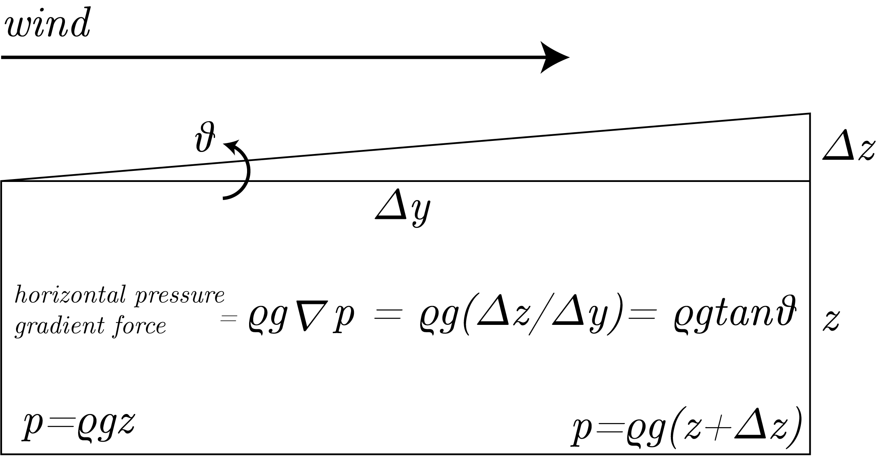
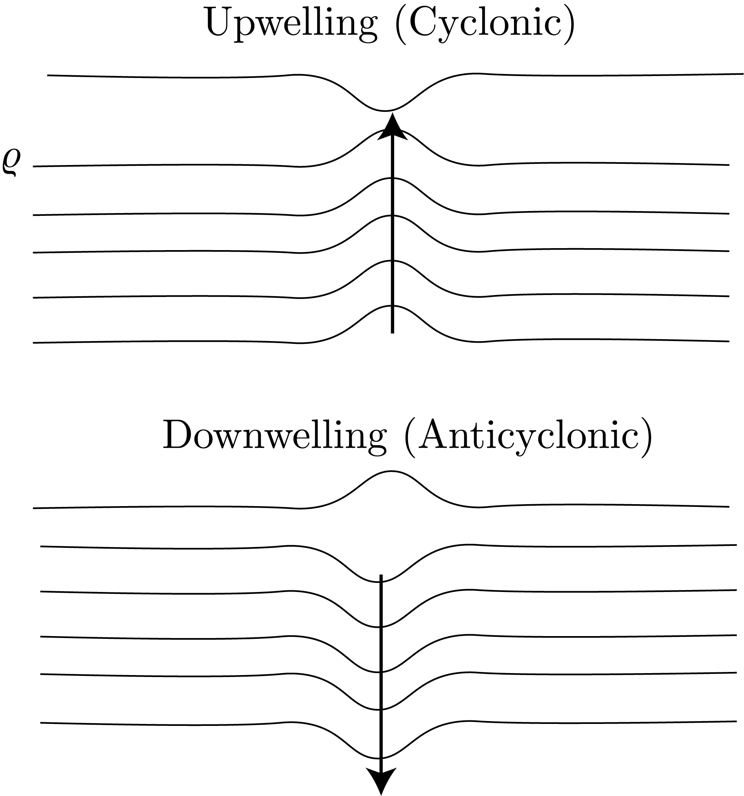
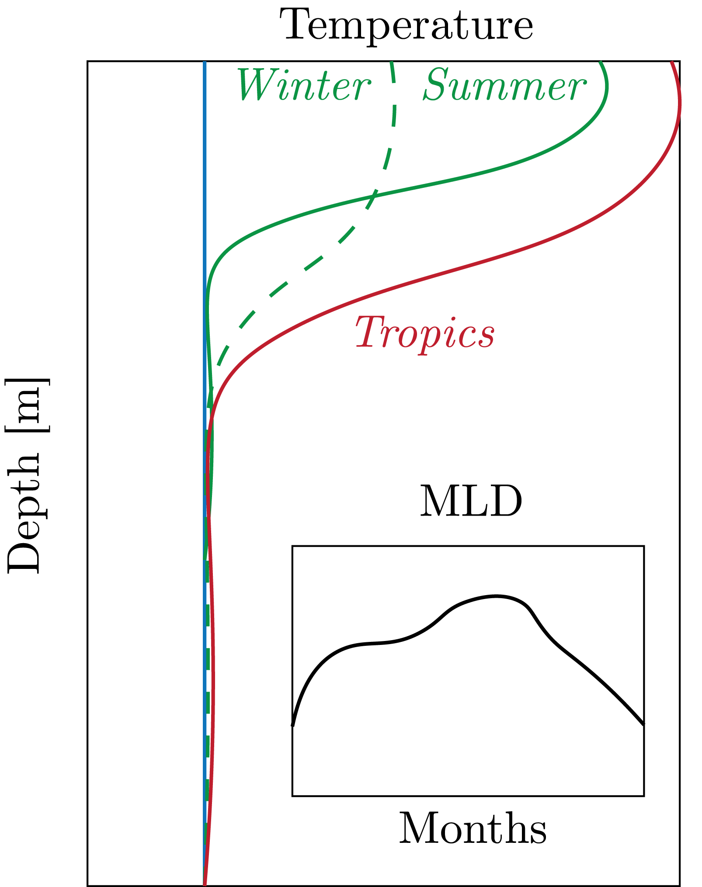

We derive and show the pressure gradient force in Fig. 1.

Fig. 1: An intuitive derivation of the pressure gradient force in the ocean.
Coriolis Force
We know that the Coriolis force, for a rotating reference frame, is given by $2\underline{\Omega} \times \underline{u}_R$, where $\Omega$ is the rotation of the earth and $\underline{u}_R$ is the fluid flow in the reference frame $R$.
See 12.801 notes for Lecture 1 for a complete derivation of this equation.
We can think of this intuitively of the Earth having a large angular momentum at the Equator and a small angular momentum at the poles, given by $\underline{r}\sim\cos\phi$ and $L = \underline{r}\times \underline{p}$, for $\phi$ latitude and $\underline{p} = m\underline{u}_R$ is the momentum. (We note that here we have not moved to infinitesimal fluid parcels for the sake of clarity, in which case we would divide by the density and not deal with momentum rather velocity).
Therefore, as the radius gets smaller, we get that the angular momentum gets smaller.
Thus, by the Conversation of Angular Momentum, we see the Coriolis force in action, by which it needs to curve in order to conserve the momentum it had in the trajectory closer to the Equator.
Of use to use, we can define the Coriolis Parameter:
\begin{equation}
f = 2\Omega \sin\phi.
\end{equation}
Geostrophic Balance
We can imagine a scenario in which, by Coriolis we have that in the NH the force is acting to the right (by the Right Hand Rule) and in a gyre we have a balanced pressure gradient force (fluid piles up in the center creating more pressure).
Therefore, we get that the pressure gradient force, under some assumptions, balances the Coriolis force.
This is the definition of Geostrophic Balance.
Please see 12.801 notes for more information on this derivation.
Ekman Transport
We also have Ekman transport via the Ekman spiral, for which the net integrated flow is to the right, in the NH.
We know that Ekman transport is defined as:
\begin{equation}
w_{Ek} = \nabla \times \underline{\tau}_w,
\end{equation}
which demonstrates this effect.
Transport in Chemical Species
Why do we care about all of this? Well, this is affect the distributions of chemical species in the ocean.
There is a balance between the surface ocean having light and the deep ocean having nutrients. N.B.: light decays exponentially with depth.
Now, one way to get an exchange between these is to have upwelling driven by winds that cause a transport of nutrients to the surface ocean.
One place that this occurs is along the coast, such as in Peru or Namibia.
We can also see that there is Equatorial Upwelling, at which point there is a divergence given the gyre circulation.
Then, by mass continuity $\nabla\cdot \underline{u} = 0$ we know that upwelling must occur.
This is different than subtropical convergence, where the gyre circulation is the same causing downwelling.
We can see this in Fig. 2.

Fig. 2: A comparison of -welling scenarios.
In addition to large-scale circulation, eddies can also cause transport. These are $\mathcal{O}(10^5)$ [m] in size and last a few months.
One example of this is Agulhas retroflection, which causes upwelling and an increases in productivity.
Mixed Layer Depths
One thing that this transport can do is change the homogeneous depth of the surface ocean, or the Mixed Layer Depth.
We show this in Fig. 3.

Fig. 3: Mixed Layer Depths.
Air-Sea Interaction
Thermodynamics
There are also important interactions with the atmosphere.
We define Henry's Law for a gas $X$ as:
\begin{equation}
K_H = \frac{C_X}{p_x},
\end{equation}
for $p_X$ the partial pressure of $X$.
We can calculate the solubility functions for these gases from observation and get that they decrease with temperature, therefore warm water holds less gas.
Additionally, salty water holds less gas, as the ions contract the water molecules, which make less space for the gas to be "fit" in.
This does not have anything to do with time.
Kinetics
Kinetics deal with time.
We define:
\begin{equation}
\phi = k_w\left(C_a - C_X \right) ,
\end{equation}
where $k_w$ is the gas transfer velocity or the piston velocity which is proportional to wind, for $C_a$ the concentration of gas in the air.